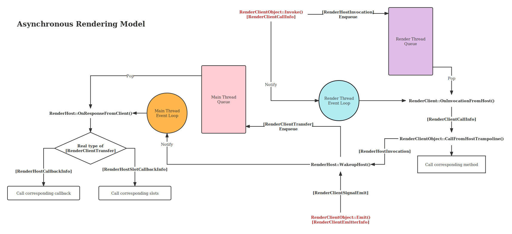

2. Glamor 异步渲染模型
2.1. 概览
Cocoa 是一个多线程程序，除了由 libuv 启动的线程池外，Cocoa 中最为重要的线程可能就是 渲染线程（Rendering Thread） 了。 渲染线程负责了所有图形资源的获取、管理和释放，并实现了一系列异步渲染 API 和信号槽机制。 在 Cocoa 中，一切渲染相关的任务都由渲染线程异步执行，主线程无须等待渲染过程结束，同时， 所有用户输入事件都由渲染线程处理，并以信号量（并非 POSIX 中定义的信号量）的形式通知主线程。
总而言之，渲染线程实现了两个功能，异步渲染 API 和图形资源管理。
2.2. 理解异步函数调用和信号槽
2.2.1. Concepts
我们首先介绍一些概念，在后文中会使用到：
- 操作（Operation）
指由主线程发起的函数调用，该调用并不会立刻执行，而是被提交到消息队列中， 在合适的时候会被渲染线程执行。操作的执行结果也会放回消息队列中，在合适的时候被主线程读取。
- 信号（Signal）和槽（Slot）
操作是由主线程主动发起的函数调用，而信号则是由渲染线程发起的一种通知机制。 函数对象可以连接（Connect）到一个信号上，这些函数就称为槽。当一个信号被发出（Emit）时， 所有连接到该信号的槽都会被调用，顺序不作保证，我们仅保证槽会在信号被接受的那个线程上被调用（通常是主线程）。
- RenderHost
主线程的一方称为 RenderHost ，相对应的，渲染线程的一方称为 RenderClient.
2.2.2. 原生层实现
备注
没有 C++ 经验和多线程开发经验的读者可以跳过此部分，不影响后续的阅读。
实现异步 API 的基础是可靠的线程间通讯机制。GLAMOR 使用了 libuv 的 async handle 配合消息队列来实现线程间通讯。这一套机制比较复杂，下图基本阐明了它的工作原理：
如图所示，渲染线程和主线程都分别有自己的事件循环和消息队列。红色字体标记的是可以引起整个流程的操作，
分别是主线程进行异步函数调用的 Invoke 函数和渲染线程发出信号的 Emit 函数。
当 Invoke 函数被调用时，在主线程上将调用相关的所有信息包装为 RenderHostInvocation 对象，
并将其推入渲染线程的消息队列，接着立刻通知渲染线程的事件循环。完成这些工作后，Invoke 函数返回。
这是异步函数调用的调用阶段。
在渲染线程中，事件循环负责调度来自主线程的通知，在合适的时候会触发渲染线程上的处理函数 OnInvocationFromHost，
接着该函数从消息队列中取出 RenderHostInvocation 对象，根据其中传递来的信息调用真正的处理函数，
处理函数完成后，RenderHostInvocation 的状态被更新（存入返回状态和返回值），
通过 WakeupHost 函数将更新后的对象推入主线程的消息队列（此时 RenderHostInvocation 被
转换为基类类型 RenderClientTransfer），并立即通知主线程的事件循环。
这是异步函数调用的返回阶段，也称为响应（Response）。
对于信号量，也遵循类似的过程，由 Emit 函数将有关信号的所有信息包装为 RenderClientSignalEmit
对象，然后同样由 WakeupHost 函数将该对象推入主线程的消息队列，并立即通知主线程的事件循环。
同样，主线程的事件循环也会在合适的时机调用对应的处理函数 OnResponseFromClient，
该函数将判断从消息队列取出的 RenderClientTransfer 对象的类型，并分别调用对应的函数来处理。
对于异步函数调用的返回数据，将从 RenderClientTransfer 中解出数据，转移到 RenderHostCallbackInfo
中，该对象将直接被传递给用户在调用时注册的用于接收返回值的回调函数。
对于信号量，将从 RenderClientTransfer 中解出数据，转移到 RenderHostSlotCallbackInfo 中，
该对象将直接被传递给用户注册的槽函数。
2.2.3. JavaScript 中的异步调用和信号槽
在异步函数调用和信号槽这两大异步机制中，有两个主要角色：RenderHost 和 RenderClient， RenderHost 是对主线程（JavaScript 线程）的抽象，而 RenderClient 则是对渲染线程的抽象。
RenderHost 可以对 RenderClient 发起函数调用，但是该函数调用并不实际在 RenderHost 上执行，
而是在 RenderClient 上执行，这是一种「远程」调用，而 RenderHost 可以等待 RenderClient 执行完毕，
并像普通函数调用那样取得结果。在 JavaScript 中，这表现为该函数调用以 Promise 对象的形式返回，
用户可以使用 await 或 then 来处理返回值。如果函数调用中发生错误，上一小节中提到的 RenderClientTransfer
对象会携带着错误信息一同返回给主线程，在 JavaScript 中表现为 promise 的 reject。
该实例演示了一个最简单的异步函数调用（忽略错误处理）：
// 假设 Adder.add 是一个异步函数调用，它返回两个数相加的结果
const result = await Adder.add(1, 2);
std.print(`Result is ${result}\n`);
// 或者使用 then 来处理：
Adder.add(1, 2).then((value) => {
std.print(`Result is ${value}\n`);
});
有一些异步函数调用没有返回值，在 JavaScript 中表现为它返回一个 Promise<void> 对象，
这种情况下，该 promise 的 resolve 表示异步函数调用已成功完成。
对于信号量而言，它用于 RenderClient 主动地通知 RenderHost， 在 JavaScript 中表现为回调函数被主动调用。
在 JavaScript 中，信号量是依托于对象存在的，如果一个对象继承自 RenderClientObject 对象，
则它就可以使用信号槽机制。在这些对象上，都有一个 connect 和 disconnect 方法，
前者用于将回调函数（槽）连接到一个特定的信号，后者用于断开连接：
// 创建一个对象，这体现了信号槽机制是依托于对象存在的
// （仅作为示例，实际 Cocoa 中不存在内建的名为 Emitter 的对象）
let emitter = new Emitter();
// 假设 Emitter 对象具有信号量 notice，将一个回调函数连接到这个信号量上
const connection = emitter.connect('notice', (content) => {
// 信号量携带一些参数，它们会直接被传递给槽函数，例如这里的 content
std.print(`Notice: ${content}\n`);
});
// 同一个对象的同一个信号量上可以连接多个槽
emitter.connect('notice', (content) => {
// 执行一些其它动作
});
// 随时可以断开槽的连接
emitter.disconnect(connection);
警告
尽管同一个对象上的同一个信号量上可以连接多个槽，但是这些槽函数的调用顺序是没有任何保证的， 用户不应当假设任何槽函数被调用的顺序。
2.3. 渲染线程控制相关 API
备注
关于 API 的详细信息，读者参见 API 文档。本文档不会详细介绍每个 API。 此处介绍一些 API 是为了说明它们应该如何、在何时被使用。
在 RenderHost 对象上有数个静态方法，用于控制渲染线程的行为和线程间同步。
使用 WaitForSyncBarrier 方法可以使当前线程阻塞，直到渲染线程将目前为止所有的消息处理完毕。
该函数引发的阻塞是真正意义上的阻塞，而不是在事件循环中等待，整个 JavaScript 线程会被暂停
（如果当前 JavaScript 运行时连接到了 Inspector，则 Inspector 也会暂停响应），
直到渲染线程清空消息队列或达到最大等待时间。
备注
如果阻塞期间有来自渲染线程的信号量，它们会在解除阻塞后被处理，且严格按照信号被发送的顺序处理。
该方法用于显式地等待渲染线程完成先前提交的所有请求，若渲染线程被大量的请求占用， 调用该方法可以暂停主线程来缓解渲染线程的压力。在一些调试情景下，该函数也十分有用。
另一个需要介绍的方法是 SleepRendererFor ，该函数可以使渲染线程阻塞一定的时间，
用以模拟渲染线程暂时失去响应的状态。需要注意的是，该函数并不会立刻使渲染线程阻塞，
而是等待先前发送的请求都处理完毕后再阻塞（可以认为阻塞也是一种特殊的请求，
也需要在消息队列中等待处理）。SleepRendererFor 函数返回一个 Promise
对象，当渲染线程从阻塞状态退出并恢复正常工作时，该 promise 被 resolve.
备注
如果阻塞期间主线程又对渲染线程发送了消息（异步函数调用），它们会在解除阻塞后被正确处理。
警告
此函数仅用于测试等特殊目的，长时间阻塞渲染线程可能导致意料之外的错误。
2.4. 追踪渲染线程上的消息传递
在 Cocoa 启动时添加 --gl-transfer-queue-profile
命令行选项可以生成对渲染线程消息队列的 profiling 报告，当 Cocoa 正常退出后，
会在工作目录生成一个 transfer-profiling-PID.json 文件，以 JSON 格式保存了 profiling 结果。
该文件遵循如下格式：
1{
2 "samples": [ /* Something */ ],
3 "type": "GLAMOR Message Queue Profiling",
4 "version": [ 1, 0, 0 ]
5}
samples 字段部分是一个对象数组，其中的每一个对象称为一个 Sample（样本），
每个 Sample 就代表消息队列中的一次消息传递（一次异步函数调用或者一次信号量传递）。
因此自然地，Sample 有两种类型，分别代表异步函数调用和信号量传递，如果该 Sample 是一次异步函数调用，它具有如下格式：
1{
2 "milestones": {
3 "ClientFeedback": 9735,
4 "ClientProcessed": 9732,
5 "ClientReceived": 123,
6 "HostConstruction": 107,
7 "HostEnqueued": 110,
8 "HostReceived": 9771
9 },
10 "opcode": 1,
11 "receiver": "0x7fc3ef64ebd0",
12 "receiverType": "RenderHostCreator",
13 "returnStatus": "OpSuccess",
14 "type": "Invocation"
15}
- milestones
包含一系列时间戳，其数值表示自渲染线程启动开始到记录该时间戳所经历的微秒数。 各个时间戳的意义如下（按其发生的时间先后顺序排列）：
STAMP
Meaning
HostConstruction
RenderHost 构造消息对象
HostEnqueued
RenderHost 将消息推入消息队列
ClientReceived
RenderClient 从消息队列中取出消息
ClientProcessed
RenderClient 完成消息处理
ClientFeedback
RenderClient 将消息返回值推入消息队列
HostReceived
RenderHost 从消息队列中取出返回值
- opcode
保存了该操作的操作码，可以理解为异步函数调用的函数名， 有关操作码的详细信息属于 Cocoa 原生层的内容， 读者可参见 Cocoa 源码中的
GLOP_*系列宏定义。- receiver
消息接收者（C++ 对象）的内存地址，用于调试目的。
- receiverType
消息接收者的类型（C++ 类型）。
- returnStatus
返回状态，有多种：
Return Status
Meaning
Pending
悬而未决的，即消息还没有被处理
OpCodeInvalid
无效的 opcode
ArgsInvalid
无效的参数
Caught
调用过程中有异常被抛出
OpSuccess
操作成功
OpFailed
操作失败
不难理解，profiling 中不会出现 Pending 这种情况。
- type
对于异步函数调用，恒为
Invocation。
而对于信号量传递，Sample 具有如下格式：
1{
2 "emitter": "0x7fc3d500a010",
3 "emitterType": "Display",
4 "milestones": {
5 "ClientEmitted": 7625976,
6 "HostReceived": 7626054
7 },
8 "signalCode": 1,
9 "type": "Signal"
10}
- emitter
信号发出者（C++ 对象）的内存地址。
- emitterType
信号发出者的类型（C++ 类型）。
- milestones
含义与上文中描述的相同。
- signalCode
信号编号，有关信号编号的内容属于 Cocoa 原生层的内容， 读者可以参见 Glamor 源码中的
GLSI_*系列宏定义。 在 JavaScript 中，如果一个对象可以使用connect方法来连接信号量， 那么可以调用它的inspectObject方法来获得在该对象上的信号编号到信号名称的映射关系 （见下一小节）。- type
对于信号量传递，恒为
Signal。
2.5. 使用 inspectObject 方法检索可异步调用的对象
如果一个来自 Glamor 的 JavaScript 对象具有 connect 和 disconnect
方法（即它们继承于 RenderClientObject 对象），就可以调用这些对象上的
inspectObject 方法来获得有关此异步对象的信息。
该方法返回一个具有如下格式的 JavaScript 对象：
1{
2 objectType: "SomeType",
3 signals: [
4 {
5 name: "SignalName",
6 code: 1,
7 connectedCallbacks: [ /* Functions */ ]
8 }
9 ]
10}
objectType 给出的类型名与 profiling 中 emitterType 和 receiverType
给出的类型名是一致的。同时也可以看到一个信号量的编号与名称之间的映射关系。
备注
尽管 objectType 给出了一个类型名称，但该名称并不稳定，随着 Cocoa 版本的迭代更新，
这些类型名称在未来很可能会变化。